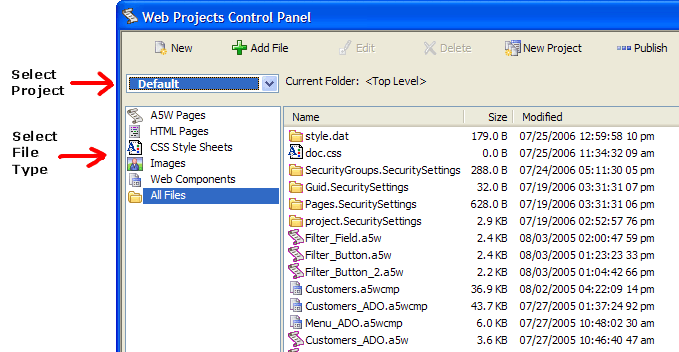

Web Projects
A web project contains and organizes the files that you will publish. Alpha Five places these files in a directory structure under the Alpha Five program folder. You may have as many projects as you need, each with a distinctive name. The Web Projects Control Panel provides a view of these projects. To start the Web Projects Control Panel, click Web Projects on the main toolbar.
To view the files used in a project, select the project name from the drop-down list box at top left. To see all files in the project "All Files". To filter the list of files shown, select any of the following:
"A5WPages"
"HTML Pages"
"CSS Style Sheets"
"Images"
"Web Components"
"All Files"

Viewing Project Files with Windows Explorer
If you prefer to view and manage project files through Windows Explorer, select Edit > Open Project in Explorer.
To find a file select Edit > Search in all Web Project files... to display the Search Web Project dialog. Enter text to search for and click Search.

To edit an object, select it in the list and click Edit Object.
To preview a file select the file you wish to see and click Preview. The preview window appears at the bottom of the Web Projects Control Panel.
Limitations
Web publishing applications only.